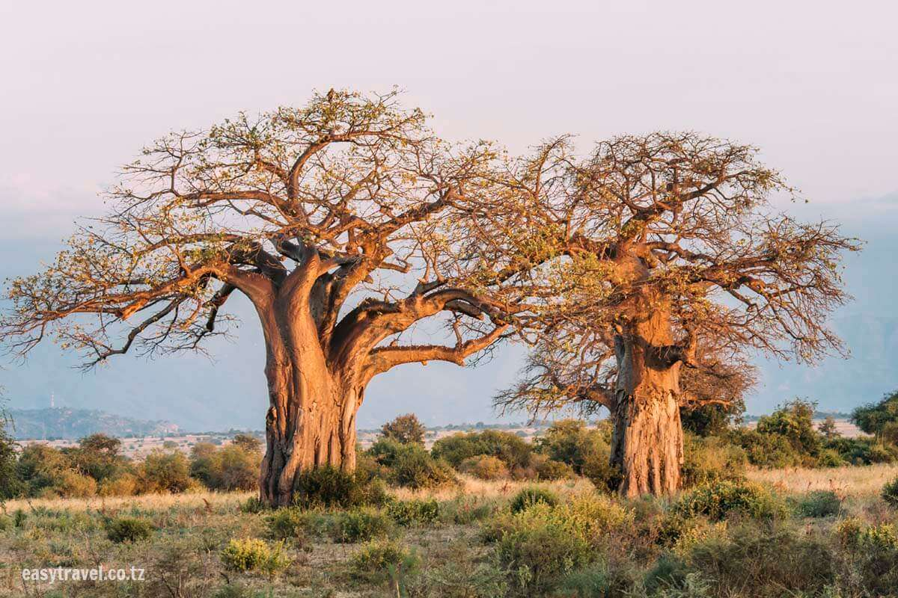
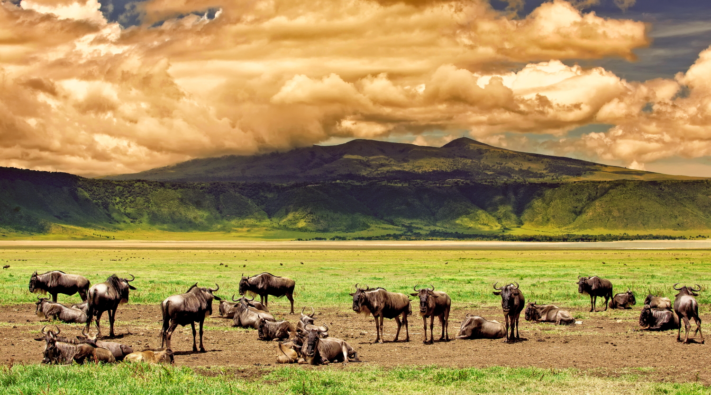
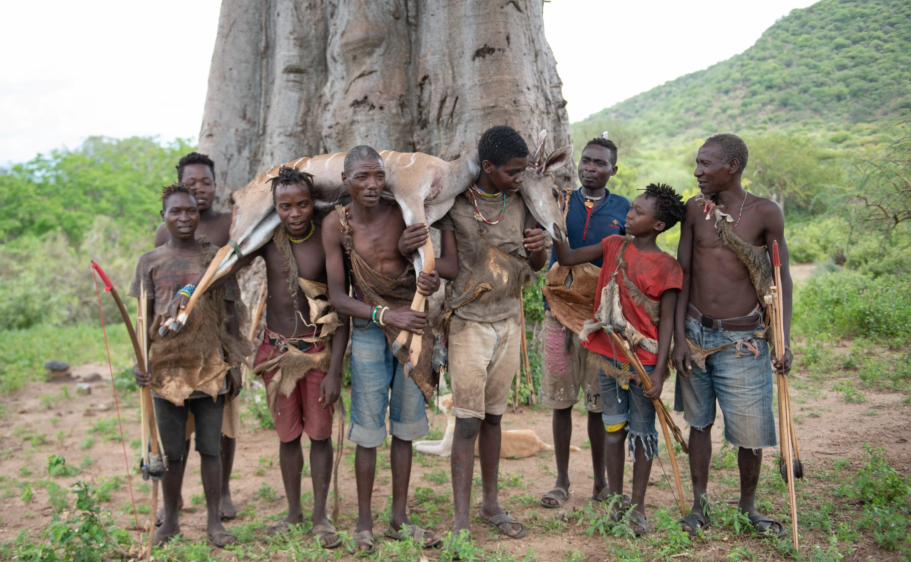
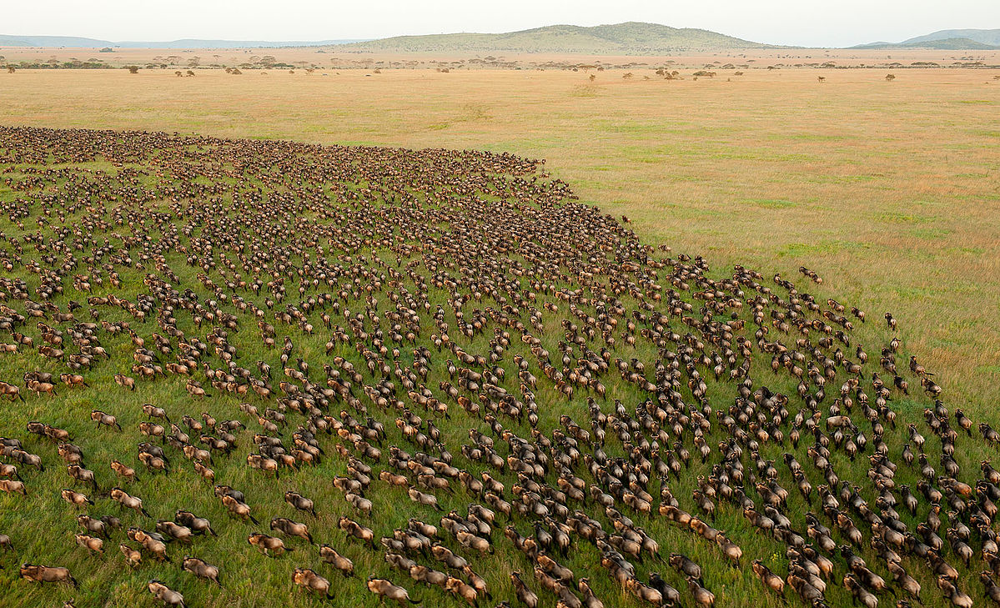
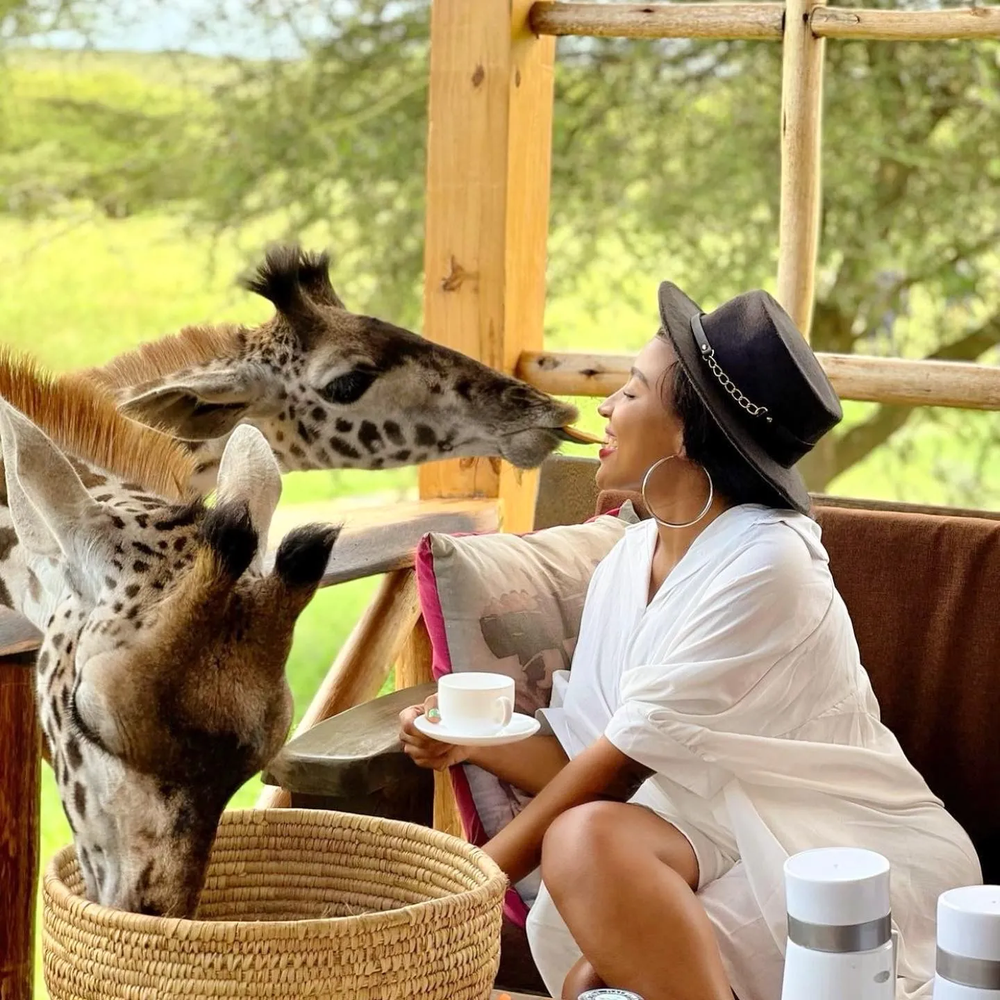
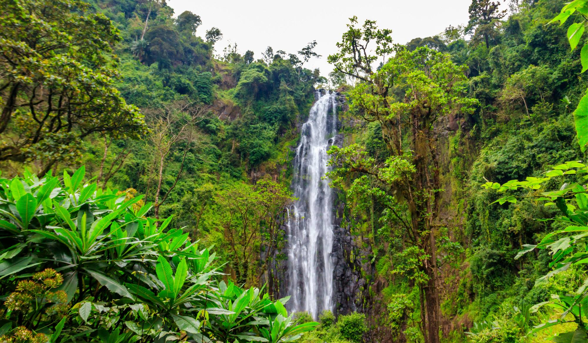
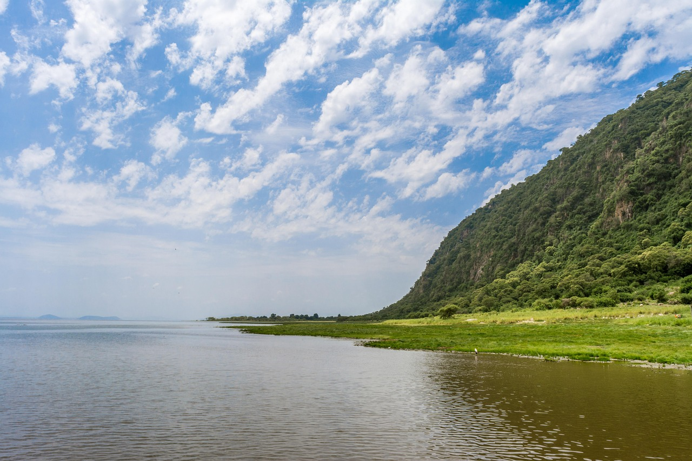
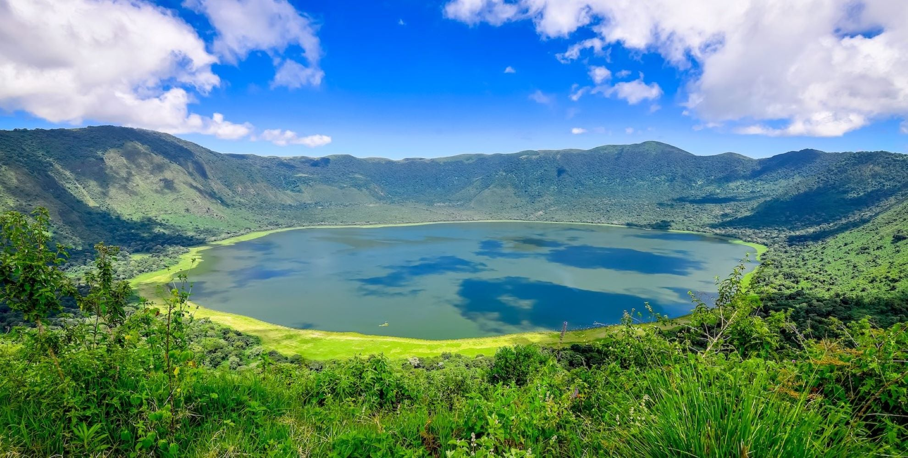
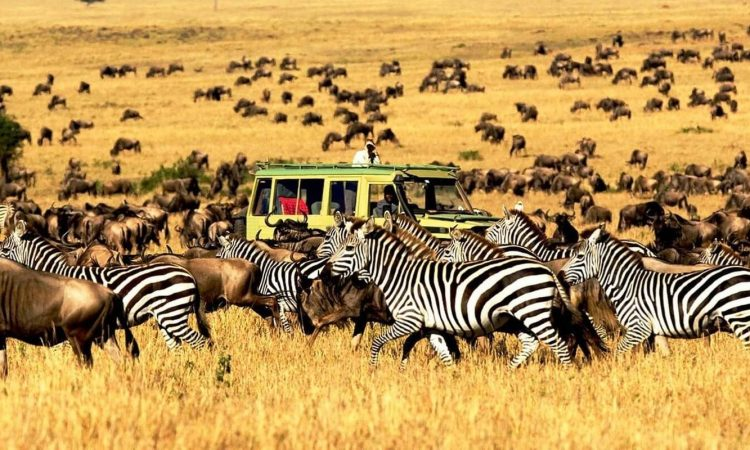
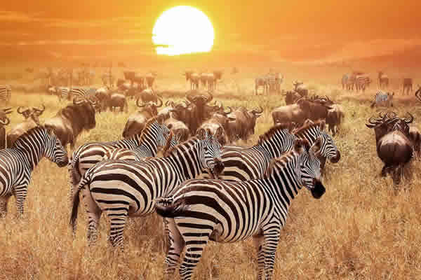

02 Days & 01 NightShort Wildlife Escape
A rapid, high-impact deployment tracking the giants of Tarangire National Park followed by a tactical descent into the prime wildlife hunting grids of the Ngorongoro Crater floor.

03 Days & 02 NightsTanzania Highlights Safari
An immersive multi-sector circuit targeting massive elephant parameters across Tarangire River sectors, paired with dramatic panoramic bird's eye overwatches from the rim of the Ngorongoro Caldera.

04 Days & 03 NightsClassic Safari Adventure
A masterfully balanced itinerary blending high-density big game tracking across Tarangire with profound cultural immersion among the ancient bush tribes of Lake Eyasi, concluding with panoramic crater overviews.

05 Days & 04 NightsThe Great Migration Core
A flagship photographic safari tracking active predators across the endless golden plains of the Serengeti, combined with high-density elephant encounters in Tarangire and a deep caldera rim overwatch.

06 Days & 05 NightsBig Five & Calving Season Migration Safari
An elite multi-destination circuit featuring rare close-quarter interactions at the Serval Wildlife eco-sanctuary, elephant tracking in Tarangire, and high-density big cat surveillance on the endless Serengeti plains.

06 Days & 05 NightsWildlife & Cultural Exploration
An exceptional multi-destination manifest balancing active trekking to Kilimanjaro's massive Materuni Waterfalls with standard Big Five safari tracking parameters across the Serengeti and Ngorongoro ecosystems.

06 Days & 05 NightsMidrange Big Five & Calving Season Migration
A premier multi-park deployment executing deep predator tracking sweeps across the Serengeti grasslands, expanding into a final-phase tactical cycling and walking reconnaissance run along the Lake Manyara shoreline.
Tanzania Wildlife & Tribal Expedition
An extensive, non-backtracking fly-out manifest tracing the ancient hunter-gatherer customs of the Hadzabe tribe, expanding into deep central cat territories and seasonal Mara River migration crossings.

08 Days & 07 NightsUltimate Wildlife Discovery
The ultimate northern manifest. Blends early eco-sanctuary contacts and traditional big game drives with high-elevation hiking routes down the volcanic walls of Olmoti and Empakaai craters alongside local Maasai guides.

09 Days & 08 NightsNorthern Wildlife & Cultural Odyssey
The definitive, high-end flagship run balancing close-quarter eco-sanctuary wildlife encounters with deep tracking sweeps across the Central and Northern Serengeti migration corridors.

10 Days & 09 Nights10-Day Exploring Tanzania
The ultimate grand manifest. Seamlessly stitches together active Kilimanjaro slope hiking, indigenous bush tribe interactions, and an expansive multi-sector tactical sweep tracking the Big Five and the Great Migration loops.